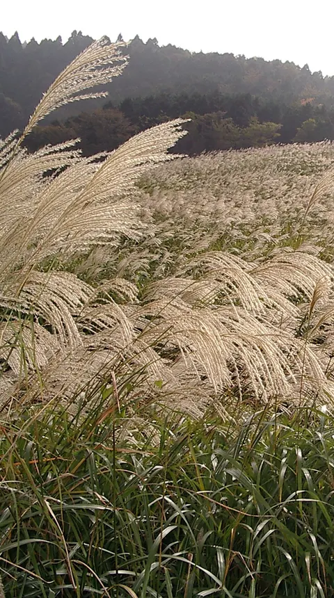

鹿屋野比売神と山野の神々古事記の神々 其の二十五
神生みで生まれた野の神・鹿屋野比売神（かやのひめのかみ）と、山の神と分け持って生んだ八柱の神々です。
古事記と、名前の意味
- カヤは屋根を葺く草。ススキやチガヤなどのことです
- 「野」は平らな土地ではなく、山すその広い傾斜地とする説があります
- 別名は野椎神（のづちのかみ）＝野の精霊。日本書紀では「草の祖（おや）」と呼ばれます
- 大山津見神と二柱で山と野を分け持ち、土・霧・谷、そして大戸惑子神・大戸惑女神を生みます
- 「惑（まと）い」の神は、霧で暗くなって人が道に迷う様子を表すという説があります

イメージ画
1分で見る
1分の動画は
12月3日 20時に公開します
12月3日 20時に公開します
出典と画像
参考：國學院大學「古事記ビューアー」「神名データベース」
写真：仙石原のススキ 撮影 Jungle／Wikimedia Commons／CC BY-SA 3.0（https://creativecommons.org/licenses/by-sa/3.0/）を切り出して使用
写真：白川郷の茅葺きの小屋（看板を消して使用） 撮影 lumoplank／Wikimedia Commons／CC0
写真：雲海の山々（木賊山付近） 撮影 Σ64／Wikimedia Commons／CC BY-SA 3.0（https://creativecommons.org/licenses/by-sa/3.0/）を切り出して使用
写真：盃ヶ岳の雲海 Wikimedia Commons／パブリックドメイン
動画のナレーション：VOICEVOX:青山龍星